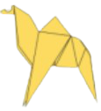
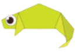
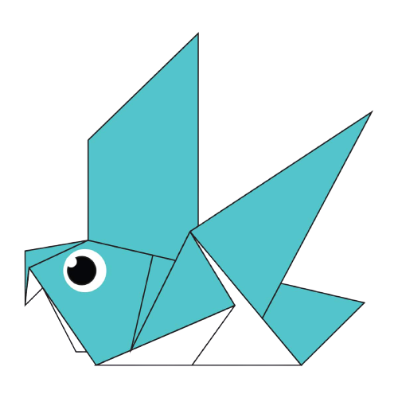
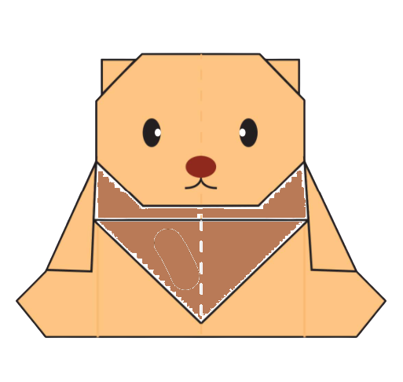

Origami Instructions & Designs
Step by Step diagrams are propably the most popular and easiest
to follow way to show how to fold things cut out of paper.
Trying to find good origami instructions on the internet can
be a lot of work though. To help your search we've put together
the largest database of free origami diagrams anywhere on the internet.
For more information-:
Click here
 Camel
- Camel's ears are furry.
- Camel can move easily across the sand because of its specially designed feet.
- When they find water,they will drink as much as possible.
 Chameleon
- Chameleon are reptiles that are part of the iguono suborder.
- Changing skin color is an important part of communication among chameleon.
- Most of the chameleons have a prehensile tail that they use to wrap around tree branches.
 Pigeon
- Pigeons are incredibly complex and intelligent animals.
- Pigeons are renowned for their outstanding navigational abilities.
- Pigeons are highly sociable animals.
 Teddy Bear
- The term bear-hug was first recorded in 1846.
- The Teddy Bears' Picnic song was originally called The Teddy Bear Two Step.
- The Oxford English Dictionary dates the first use of the term teddy bear to 1906.